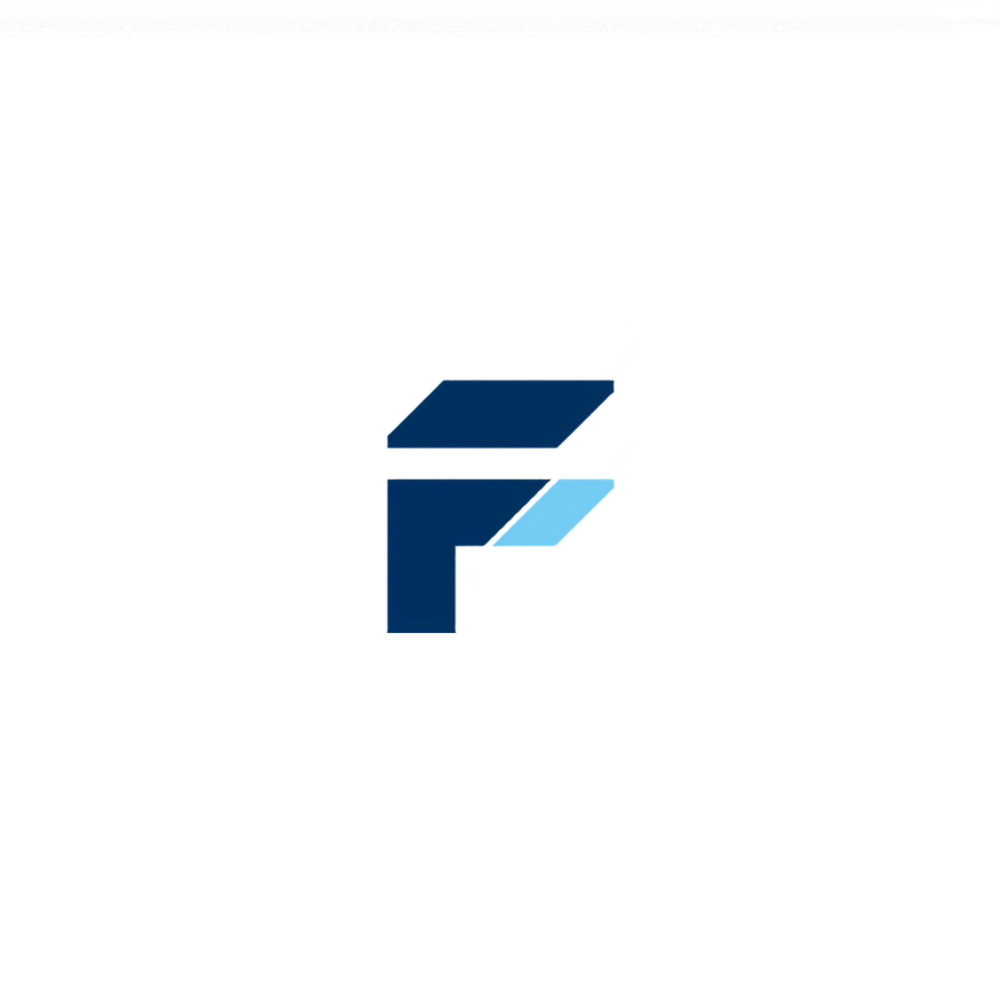
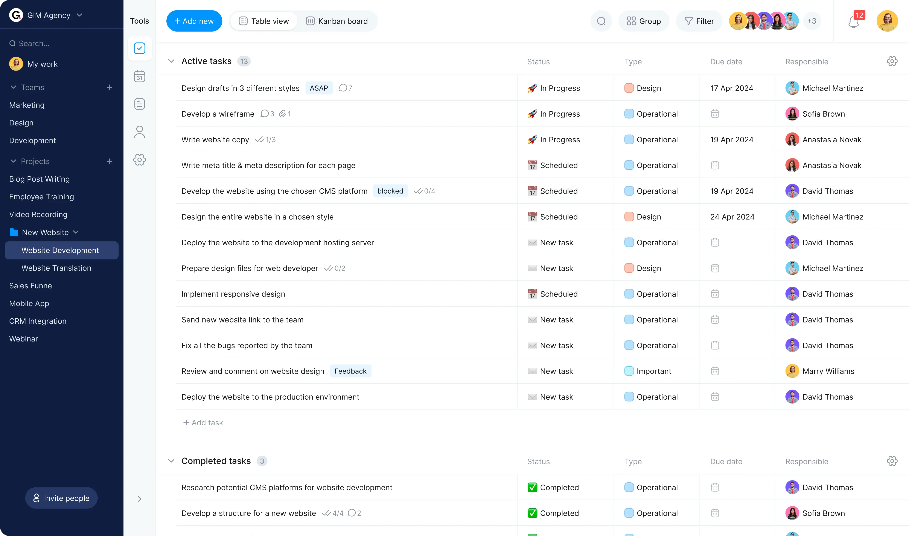

Mobil teknolojiler, web geliştirme ve ağ sistemleri alanlarında kendini sürekli geliştiren bir geliştirici adayıyım. Modern tasarım anlayışı, kullanıcı deneyimi ve teknik yetkinlikleri bir araya getirerek işlevsel ve yenilikçi dijital çözümler üretmeyi hedefliyorum.
Merhaba, ben Furkan AKSOY. İstanbul Nişantaşı Üniversitesi Mobil Teknolojileri Programı öğrencisiyim. Mobil uygulama geliştirme, web teknolojileri, ağ sistemleri ve kullanıcı deneyimi alanlarına ilgi duyuyorum.
Eğitim hayatım boyunca HTML, CSS, JavaScript ve temel ağ teknolojileri üzerine çalışmalar gerçekleştirdim. Geliştirdiğim projelerde kullanıcı dostu, mobil uyumlu ve modern tasarım anlayışını ön planda tutuyorum.
Profilo Mesleki ve Teknik Anadolu Lisesi Bilişim Teknolojileri bölümünde aldığım eğitim ve IT Stajyeri olarak edindiğim deneyimler sayesinde teknik bilgi birikimimi güçlendirdim. Üniversite eğitimim boyunca yeni teknolojileri öğrenmeye devam ederek yazılım ve bilişim sektöründe kendimi geliştirmeyi hedefliyorum.
Uzun vadede mobil teknolojiler ve yazılım geliştirme alanlarında uzmanlaşarak yenilikçi projeler üretmek, kullanıcıların hayatını kolaylaştıran çözümler geliştirmek ve teknoloji dünyasında değer üreten bir profesyonel olmak istiyorum.

Örnek proje görselidir
Kullanıcıların görev ekleyebildiği, düzenleyebildiği ve tamamlananları takip edebildiği JavaScript tabanlı bir örnek proje.
Bütçe takibi, gelir-gider yönetimi ve kişisel finans planlama özelliklerine odaklanan proje.
Ürün stoklarını yönetmeye yardımcı olan, sevkiyat ve envanter kontrolü sağlayan arayüz çalışması.
Mobil teknolojiler, web geliştirme ve ağ teknolojileri alanlarında akademik eğitimime devam ediyorum.
Kurumsal bir yapıda teknik destek süreçlerini deneyimledim, donanım ve yazılım sorunları üzerine çalışmalar yaptım.
Yazılım temelleri, algoritma mantığı, veritabanı ve bilişim teknolojileri alanlarında teknik eğitim aldım.